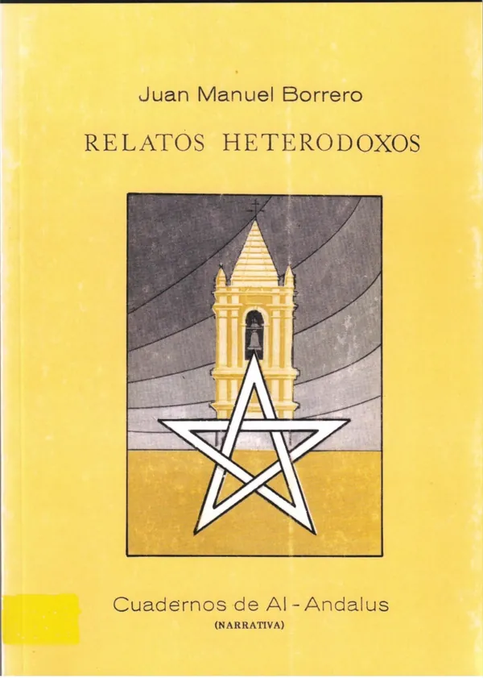
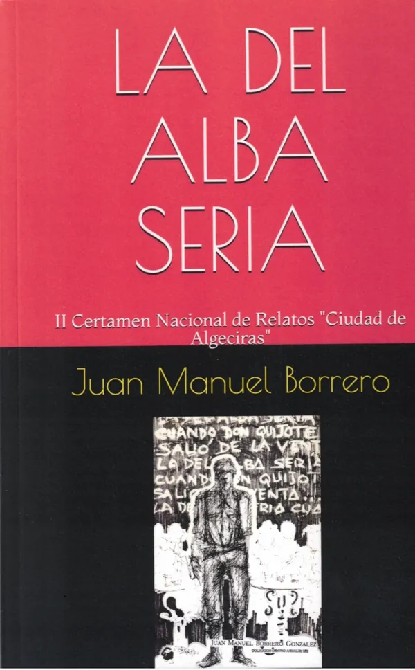
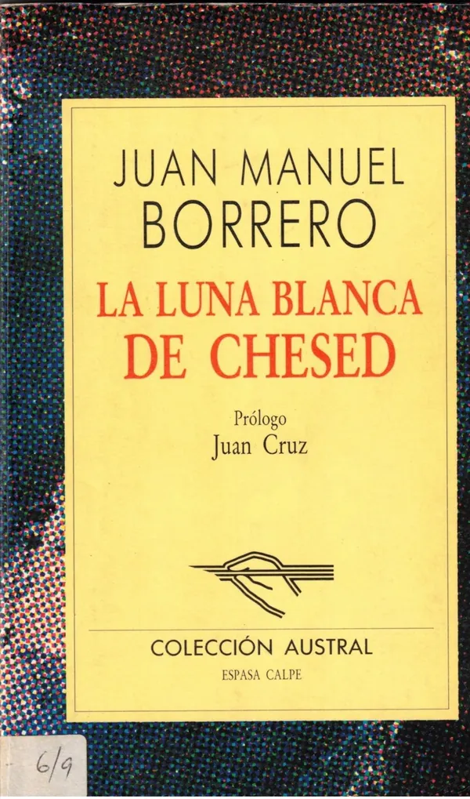
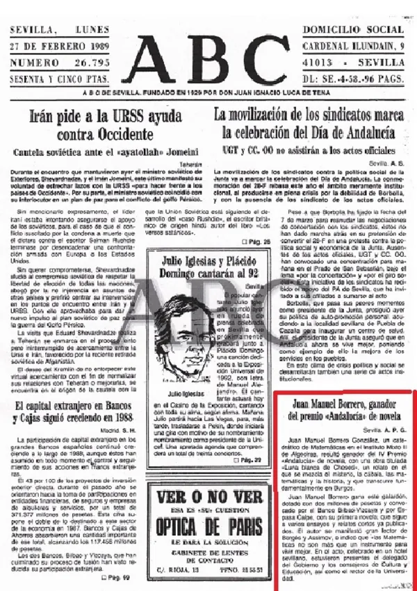

Un físico que escribe
Juan Manuel Borrero González es un escritor español nacido en El Cerro del Andévalo (Huelva) en 1947. Aunque su formación académica está vinculada a las ciencias, pues es licenciado en Física y Catedrático de Matemáticas1, ha desarrollado una destacada trayectoria literaria que lo sitúa entre los autores andaluces más prolíficos. A lo largo de varias décadas ha cultivado diversos géneros, desde el relato y la novela hasta el ensayo y el artículo periodístico, combinando en muchas ocasiones elementos filosóficos, históricos y simbólicos.

Su primera obra publicada —de fuertes raíces borgianas— fue Relatos heterodoxos2, un conjunto de narraciones que ya mostraban algunas de sus características y que, posteriormente, definirían su proyecto literario: el gusto por lo insólito, la reflexión intelectual y la exploración de los límites entre realidad y ficción.
Esta publicación supuso el inicio de un sello de autor que pronto recibiría reconocimiento nacional.
El año de Juan Manuel Borrero
El año 1989 resultó especialmente importante para el autor3. En primer lugar obtuvo el II Premio Nacional de Relatos Ciudad de Algeciras con La del alba sería4, una obra que consolidó su prestigio como narrador. Ese mismo año consiguió el IV Premio Andalucía de Novela5 con La luna blanca de Chesed6, considerada una de sus obras más relevantes.



Esta novela destaca por la combinación de elementos históricos, filosóficos y esotéricos. Enmarcada en la baja Edad Media, aparecen en ella referencias a la cábala, al pensamiento pitagórico y a diversas corrientes místicas, integradas en una trama donde el misterio y la intriga desempeñan un papel fundamental.
La crítica destacó la originalidad con la que el autor relaciona el orden matemático y la magia.
La crítica literaria7 destacó la originalidad con la que el autor relaciona el orden matemático y la magia, dos conceptos aparentemente opuestos que en la novela aparecen estrechamente vinculados8.